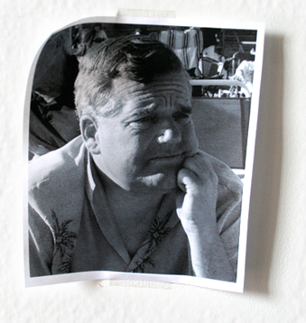

Every celebrity deals with his or her share of obsessed fans. "I Think We're Alone Now" is a documentary that focuses on two individuals, Jeff and Kelly, who claim to be in love with the 80's pop singer Tiffany.
Jeff Turner, a 50-year-old man from Santa Cruz, California has attended Tiffany concerts since 1988. Diagnosed with Asperger's syndrome, he never had a girlfriend. Jeff spends his days hanging out on the streets of Santa Cruz, striking up conversations with anyone who has a moment to spare.
Kelly McCormick is a 35-year-old intersex person from Denver, Colorado, who claims to have been friends with Tiffany as a teenager. She credits Tiffany as the shining star who has motivated her to do everything in her life.
Both Jeff and Kelly have been labeled stalkers by the media and other Tiffany fans. This film takes you inside the lonely lives these two characters, revealing the source of their clinging obsessions. This age-old story of unrequited love takes a comedic and emotional trip through themes of desperation, isolation, and hope, in the end showing that having something, or someone, to believe in can be more powerful than anything reality has to offer.